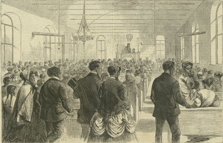

|
Established in 1869, the Colored National Labor Union (CNLU) was the
first major attempt on the part of African Americans to organize their
labor collectively on a national level. The CNLU, like other labor
unions, had as its goal improving the working conditions and quality of
life for its members. Unfortunately, in its short life span, the CNLU
made precious few inroads for its black constituents.
African-Americans had traditionally been excluded from existing labor
unions, but when workers sought to capitalize on organizational
opportunities created by the Civil War and formed the National Labor
Union (NLU), black laborers wanted to participate as well. William
|

This illustration from Harper's Weekly
shows the founding of the Colored National Labor Union
|
Sylvis, president of the NLU, made a speech in which he agreed that
there should be "no distinction of race or nationality" within the ranks
of his organization. In 1869, several black delegates were invited to
the annual meeting of the NLU. One of these delegates was a man named
Isaac Myers, a prominent organizer of African American laborers. At the
convention, he spoke eloquently for solidarity, saying that white and
black workers ought to organize together for higher wages and a
comfortable standard of living. Unfortunately, Myers's plea fell on
deaf ears. The white unions refused to allow blacks to enter their
ranks. In response to this, Myers met with other African American
laborers to form a national labor organization of their own. In 1869,
the Colored National Labor Union was formed with Myers as its first
president.
The CNLU was established in order to help improve the harsh
conditions facing black workers. Exclusionary white unions and
uncooperative employers prevented African Americans from getting
highly-paid, skilled labor jobs in the North. In the South the
emancipation of the slaves did not result in social or economic
equality. Among the goals of the CNLU, which represented African
American laborers in twenty-one states, were the issuance of farm land
to poor Southern blacks, government aid for education, and new
non-discriminatory legislation that would help black workers who
struggled to make ends meet.
The CNLU ultimately made few economic gains for African-Americans. A
hostile and prejudiced business and labor environment prevented the CNLU
from making much headway, and in 1872 the union went under. The CNLU
did, however, help raise awareness amongst many people in the labor
movement that all workers deserved adequate representation.
Source: Joan Waugh, ed., Facts on File Encyclopedia of American
History: Civil War and Reconstruction, 1856 to 1869 (New York: Facts on
File, 2003), 68.
|